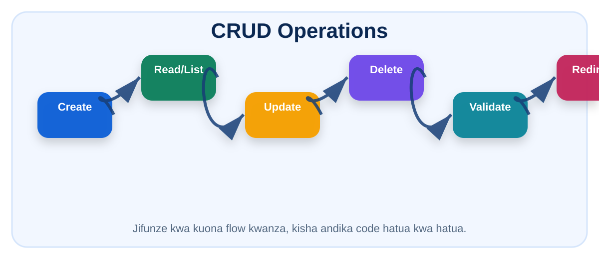

Somo 089: CRUD: CRUD kamili: Create, Read, Update, Delete - Somo 9
CRUD kamili: Create, Read, Update, Delete. Lengo ni kuelewa kwa vitendo, kuandika code, kisha kufanya mazoezi bila kutegemea video.
1. Maelezo rahisi
CRUD ni moyo wa admin systems nyingi. Ukielewa create, list, edit, update na delete vizuri, unaweza kujenga staff, stock, students, products, bills na modules nyingine.
Fikiria kama mtoto anayejifunza hatua kwa hatua: kwanza unauliza, “mtumiaji ametuma nini?” pili “server itafanya nini?” tatu “nitaonyesha nini?” Ukifuata maswali haya matatu, JSP na Servlet hazitakuchanganya.
Katika project ya kisasa, usiandike kila kitu ukurasa mmoja. Tenganisha HTML, Java code, database code na security. Hii inafanya system iwe safi, rahisi kurekebisha, na rahisi kuongezwa features.

2. Hatua za kufanya
3. Code examples za somo hili
form_jsp
<form action="save-student" method="post">
<label>Full Name</label>
<input type="text" name="fullName" required>
<label>Email</label>
<input type="email" name="email" required>
<label>Course</label>
<select name="course" required>
<option value="JSP & Servlets">JSP & Servlets</option>
<option value="Java JDBC">Java JDBC</option>
</select>
<button type="submit">Save Student</button>
</form>prepared
String sql = "INSERT INTO students(full_name,email,course) VALUES(?,?,?)";
try (Connection con = DB.getConnection();
PreparedStatement ps = con.prepareStatement(sql)) {
ps.setString(1, student.getFullName());
ps.setString(2, student.getEmail());
ps.setString(3, student.getCourse());
ps.executeUpdate();
}save_servlet
@WebServlet("/save-student")
public class SaveStudentServlet extends HttpServlet {
@Override
protected void doPost(HttpServletRequest request, HttpServletResponse response)
throws ServletException, IOException {
request.setCharacterEncoding("UTF-8");
String fullName = request.getParameter("fullName");
String email = request.getParameter("email");
String course = request.getParameter("course");
if (fullName == null || fullName.trim().isEmpty()) {
request.setAttribute("error", "Jina linahitajika.");
request.getRequestDispatcher("/WEB-INF/views/student-form.jsp").forward(request, response);
return;
}
// Hapa ndipo utaita DAO kuhifadhi database.
response.sendRedirect(request.getContextPath() + "/students?success=Student saved");
}
}Video ya somo hili
Video hii ni YouTube embed inayocheza ndani ya website. Fungua project kwa local server ili Error 153 isitokee.
4. Mazoezi ya lazima
- Badilisha URL path iwe yako mwenyewe.
- Ongeza validation moja ya server side.
- Ongeza success au error message.
- Andika comment kwenye kila block kueleza kazi yake.